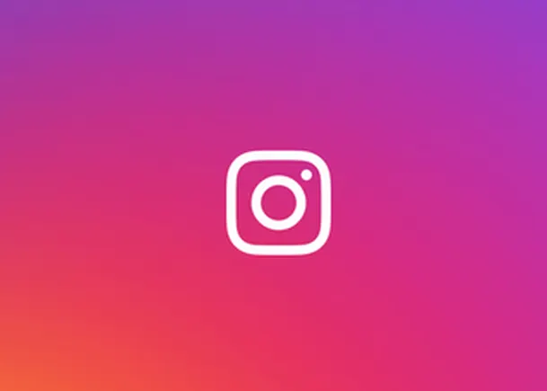

Entrepreneur
.jpg)
MOHAMED SUHAIL S
upcoming entrepreneur
An upcoming entrepreneur is a person who plans to start and grow a business by using innovative ideas and hard work. They identify problems, create solutions, and take calculated risks to achieve success. With determination, leadership skills, and continuous learning, upcoming entrepreneurs contribute to economic growth, create employment opportunities, and inspire others through their creativity and vision
Figure: Symbol of Inner Strength and Determination
This image portrays a mysterious figure standing in darkness with a bright flame emerging from the arm. The contrast between darkness and light symbolizes hope, courage, and resilience in challenging situations. The glowing flame represents inner strength, passion, and the determination to overcome obstacles. It conveys the message that even in difficult times, a person's confidence and perseverance can illuminate the path to success..
This image symbolizes the entrepreneurial journey, where challenges and uncertainties are common. The darkness in the background represents obstacles and risks, while the bright flame signifies innovation, passion, and determination. Just as the flame shines despite the darkness, successful entrepreneurs remain focused on their goals despite difficulties. The image highlights the importance of courage, creativity, and perseverance in transforming ideas into successful ventures and achieving long-term growth.
independent
contact us
loneworld@gmail.com
 +91-93xxxxxxxx
+91-93xxxxxxxx

sad_xxxxx_